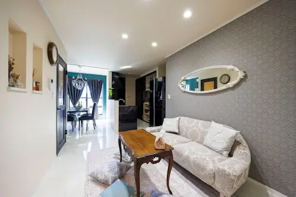

Japan / Aichi / Oharu
Oharu · Aichi
Oharu
Highlighted on the Aichi map.
Oharu Town Hall
No bookable places to stay found in Oharu — nearest options in Kiyosu.

Places to eat · Places to stay
Nearby in Aichi: ← Oguchi · Okazaki →
Other towns: Agui · Aichikonan · Aisai · Amashi · Anjo · Chiryu · Chita · Chitamihama · Fuso · Gamagori · Handa · Hekinan · Higashiura · Ichinomiya · Inazawa · Inuyama · Iwakura · Kanie · Kariya · Kasugai · Kitanagoya · Kiyosu · Komaki · Kota · Minamichita · Miyoshiaichi · Nagakute · Nagoya · Nishio · Nisshin · Obu · Oguchi · Okazaki · Owariasahi · Seto · Shinshiro · Shitara · Tahara · Takahama · Taketoyo · Tobishima · Toei · Togo · Tokai · Tokoname · Toyoake · Toyohashi · Toyokawa · Toyone · Toyota · Toyoyama · Tsushima · Yatomi
All towns in Aichi · Back to all prefectures